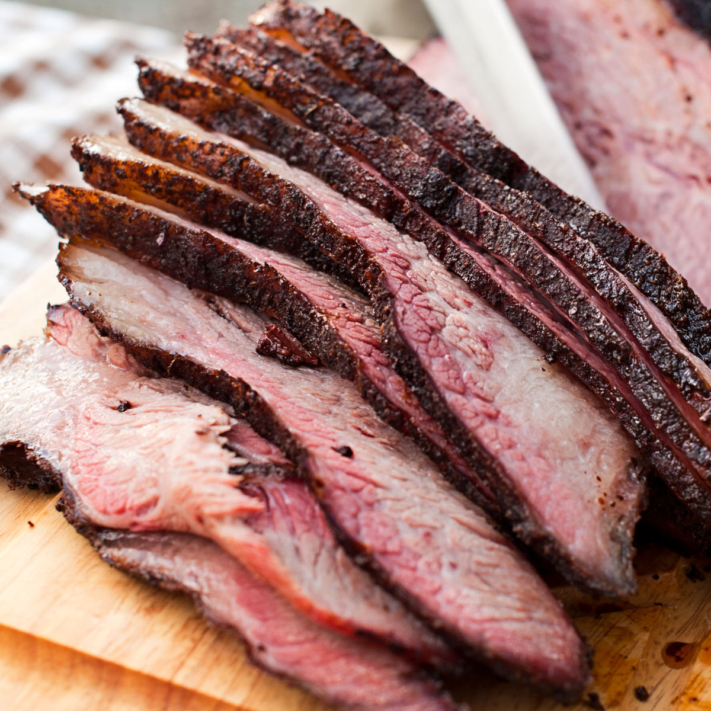

How to make the best fucking brisket

You are going to need to set aside a lot of time for this one. 8-12 hours depending on how big your brisket is. It will be worth it in the end.
Ingredients
- 5-8lb PRIME brisket
- Ground Mustard
- Trager Seasoning (beef)
- Butcher Paper
- Salt & Pepper
Prep
- Trim the fat down till its 1/4 inch thick on the fat side. You do not want to remove all of it.
- Pre heat your smoker to 180 with the lid open
- Brush a thin layer of mustard all over your brisket, then cover heavily in the seasoning of your choice. Add salt and pepper.
Cook
- Place your brisket on the smoker fat side up and cook until the internal temp reaches 160 at the thickest part of the meat
- Once temp reaches 160 you are going to wrap the brisket tightly in butcher paper. Return to the grill and cook until temp of 204
- Once temp is at 204, remove from the grill and let rest for 1-2 hours.
- Unwrap and slice against the grain